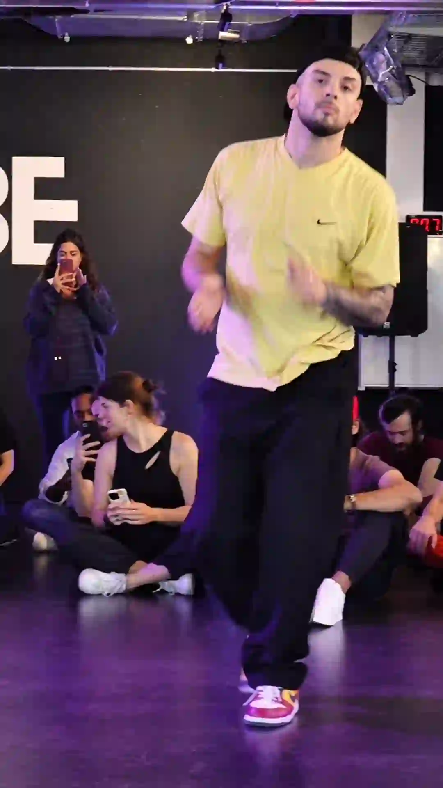
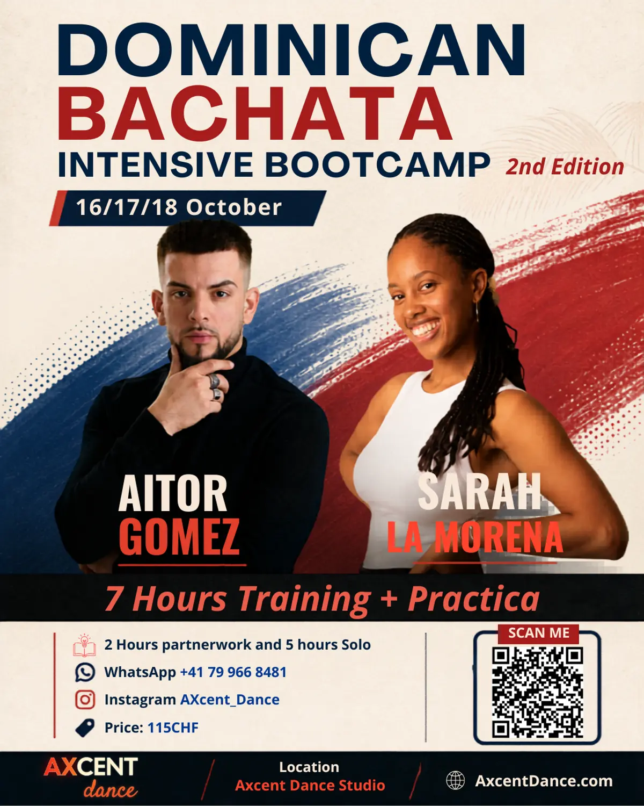

Every new student asks the same question in their first week: is this Bachata Sensual or Dominican Bachata? The honest answer is that both live under the AXcent roof, and they feel like two different dances even though they share a name. Here is what actually separates them, and how to decide which one to start with.
Same Name, Two Very Different Dances
Dominican Bachata is the original. It grew out of the roots and history of Bachata in the Dominican Republic during the 1960s, and it is still danced today the way it has always been danced across the island: fast, playful, and built around footwork and hip movement rather than posing.
Bachata Sensual is much younger. It was developed in the early 2000s in Cadiz, Spain, by Korke and Judith, who layered body waves, isolations, and a slower, more theatrical musicality onto the Bachata foundation. Read our full guide to Bachata Sensual if you want the deeper story of how it became the dominant style at congresses worldwide. Both styles share the same four-count basic step and the same guitar-driven music at their core — that is why they still carry the same name, and why what is Bachata, really is worth reading before you pick a lane.
Dominican Bachata vs Bachata Sensual: Side by Side
Dominican Origins
Born in the 1960s Dominican Republic as working-class music, danced the same way in living rooms and street parties for over sixty years. No choreography required — just the rhythm and your partner.
Sensual Origins
Developed in 2000s Cadiz, Spain, by Korke and Judith, who built a new vocabulary of isolations and body movement on top of traditional Bachata, aimed at the international congress scene.
Dominican Music
Traditional guitar, bongo, and güira, played fast and bright. The classic Bachata sound the dance was built around, with an unmistakable raw, romantic energy.
Sensual Music
Modern pop and R&B Bachata remixes with atmospheric production, dramatic builds, and pauses that give dancers space to interpret the music slowly and dramatically.
Dominican Footwork
Fast, intricate footwork with playful hip action and quick turn patterns. The energy stays high, and the focus is on rhythm and musicality in the feet.
Sensual Connection
Body waves, chest isolations, and a close embrace where movement is shared slowly between partners. This is where Bachata Sensual earns its name.

Which Style Fits Your Personality?
There is no wrong answer here, but most people lean one way once they hear the two styles described honestly.
Choose Dominican Bachata if...
You want to dance Bachata the way it has been danced in the Dominican Republic for generations. You are drawn to fast footwork and high-energy social dancing, and you want a strong foundation before layering anything modern on top.
Choose Bachata Sensual if...
You are drawn to close connection, body movement, and slow musicality. You want to develop control over waves and isolations, and you want a style that transfers directly to congresses and socials internationally, where Sensual is now the dominant style.
You Do Not Have to Choose Just One
In practice, most dancers eventually learn both, and neither path is a dead end. Our Bachata Beginner 1 course builds the fundamental step, timing, and lead-and-follow connection that both styles are built on. From there, you can continue toward the fast footwork of the Dominican tradition, or move into our Bachata Sensual Foundation course to start developing body isolations and styling.
Cross-training between the two makes you a more complete dancer either way. Dominican Bachata sharpens your rhythm and footwork, while Bachata Sensual sharpens your connection and body control. Check our weekly class schedule to see where each track currently fits.

Want to Try Dominican Bachata at Full Intensity?
If the Dominican side of this comparison is calling to you, the fastest way to experience it properly is our Dominican Bachata Bootcamp on October 16 to 18, 2026, with international instructors Aitor Gomez and Sarah La Morena. Read what to expect at the bootcamp before you book your place.
Frequently Asked Questions
What is the real difference between Bachata Sensual and Dominican Bachata?
Dominican Bachata is the traditional style from the Dominican Republic, built around fast footwork, hip movement, and a playful social energy. Bachata Sensual is a modern style developed in Spain in the 2000s, built around body waves, isolations, and a slower, more theatrical connection. Both share the same basic step and the same musical roots.
Which style is better for a complete beginner?
Neither style requires prior experience, and both start from the same Beginner 1 course at AXcent Dance. Some students find the Dominican footwork more intuitive because it is faster and more rhythm-driven, while others prefer starting with Bachata Sensual because the pace is slower and easier to process while learning connection.
Can I learn both Bachata Sensual and Dominican Bachata at the same time?
Yes. Many AXcent students train in both tracks in parallel once they have the fundamentals down. Cross-training improves footwork, connection, and musicality faster than focusing on a single style alone.
Does AXcent Dance in Zurich teach both styles?
Yes. AXcent Dance in Zurich Altstetten runs dedicated Bachata Beginner courses alongside a full Bachata Sensual track, plus periodic intensives such as the Dominican Bachata Bootcamp with international instructors. Check the weekly schedule for current class times.
Come Feel the Difference Yourself
Reading about it only gets you so far. Book a free trial class at AXcent Dance in Zurich and try the fundamentals both styles share, no partner or experience required. You can always register for a class once you know which track calls to you.
BOOK YOUR FREE TRIAL